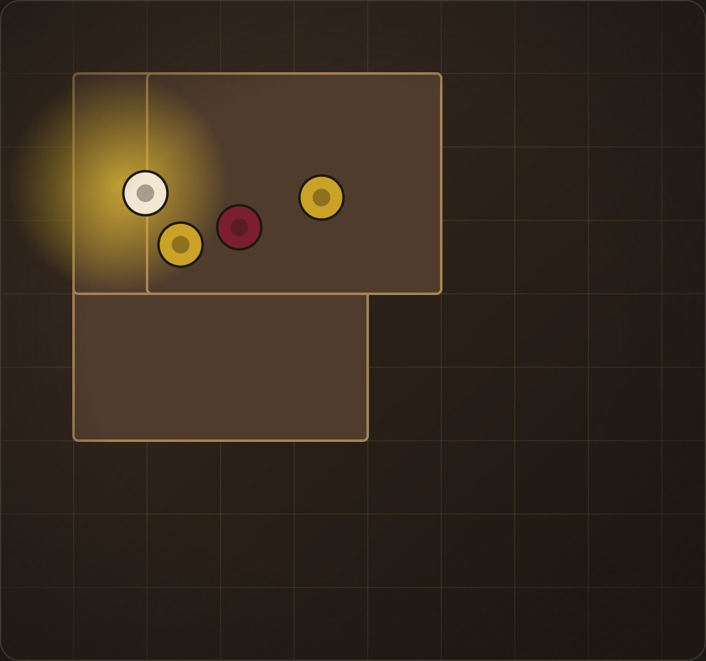

Dados
Role d4 a d20 direto na sala, com histórico visível para todos e resultados com modificadores.
Saiba mais sobre os dados
RPG de mesa online
Dados, mapas, fichas e chamadas de vídeo em um só lugar. Crie salas públicas ou privadas, jogue com seus amigos e transmita suas aventuras ao vivo.

Tudo em um só lugar
Chega de alternar entre dez abas: a Vinte Faces reúne as ferramentas do RPG de mesa online.
Role d4 a d20 direto na sala, com histórico visível para todos e resultados com modificadores.
Saiba mais sobre os dadosSuba mapas, mova tokens e revele a masmorra no ritmo da narrativa.
Saiba mais sobre os mapasFichas de personagem salvas na sala, sempre à mão do jogador e do mestre.
Saiba mais sobre as fichasVoz, vídeo e chat na mesa, com opção de transmitir a sessão para espectadores.
Saiba mais sobre chamadas e livesComo funciona
Sem instalar nada e sem configurar ferramentas externas. Abra a sala, chame a mesa e comece a jogar.
VER PASSO A PASSODefina o nome, o sistema, o limite de jogadores e se a sala é pública ou privada.
Compartilhe o link com seus jogadores ou deixe a sala aberta para quem quiser entrar.
Role dados, mova tokens, abra fichas e, se quiser, inicie uma live para espectadores.
Salas abertas
Lives
Quer ver como outras mesas jogam? Entre como espectador em salas que liberaram a transmissão e acompanhe a história sem interferir na mesa.
Crie sua primeira sala em poucos cliques e chame a mesa para jogar.